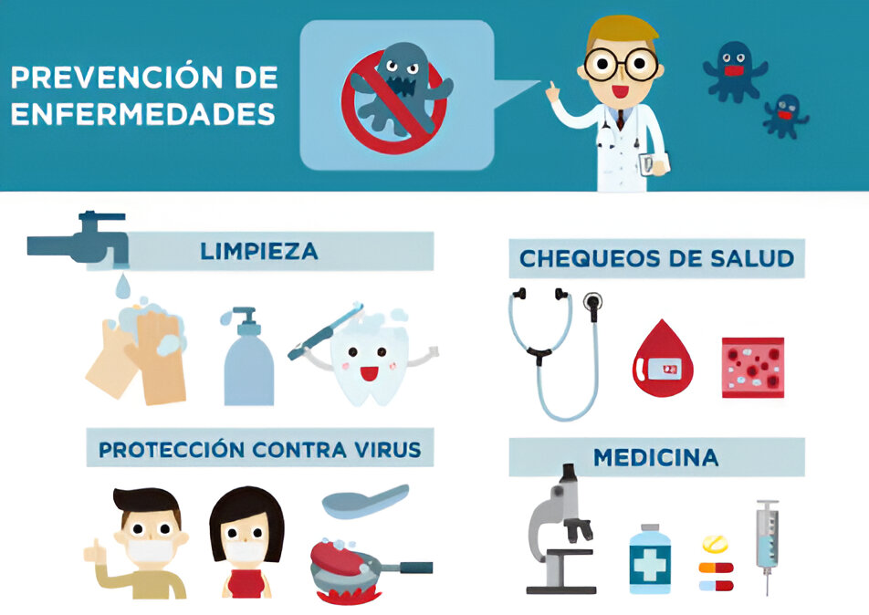

| Enfermedad | Medidas Prevención | Importancia Prevención |
|---|---|---|
| Gripe | Vacunación anual Lavado de manos frecuente Evitar el contacto cercano con personas enfermas |
Reduce el riesgo de complicaciones graves, especialmente en población vulnerable |
| Cáncer de piel | Protección solar adecuada Evitar la exposición prolongada al sol Uso de ropa protectora |
Previene el desarrollo de melanomas y otros tipos de cáncer de piel |
| Obesidad | Dieta equilibrada Actividad física regular Educación nutricional |
Reduce el riesgo de desarrollar diabetes, enfermedades cardíacas y apnea del sueño |
| Hipertensión | Dieta baja en sal Actividad física regular Reducción del estrés Chequeos médicos periódicos |
Evita enfermedades cardiovasculares y daño a órganos como los riñones |
| Osteoporosis | Consumo adecuado de calcio y vitamina D Ejercicio con peso Evitar el alcohol y el tabaco |
Previene fracturas y mejora la calidad de vida en la edad avanzada |
| Faringitis | Evitar compartir utensilios Buena higiene bucal Lavado de manos frecuente |
Reduce la propagación de bacterias y virus que causan infección en la garganta |
| Conjuntivitis | No tocarse los ojos sin lavarse las manos Evitar compartir toallas o maquillaje |
Disminuye la probabilidad de contagio y brotes en entornos compartidos. |
